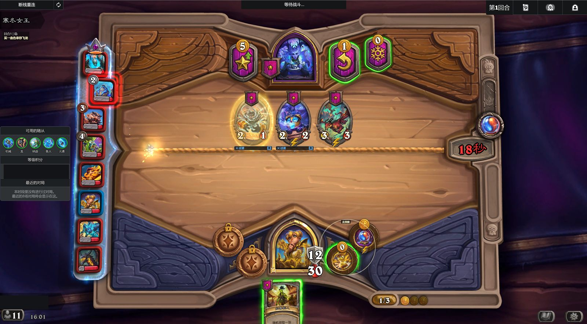
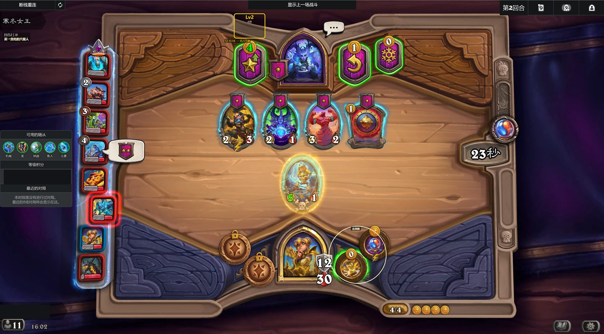
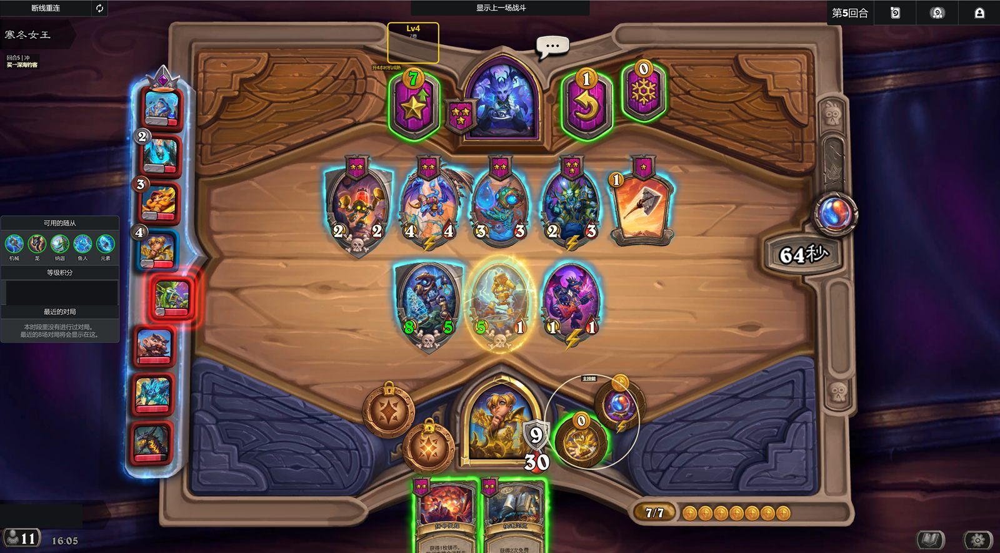
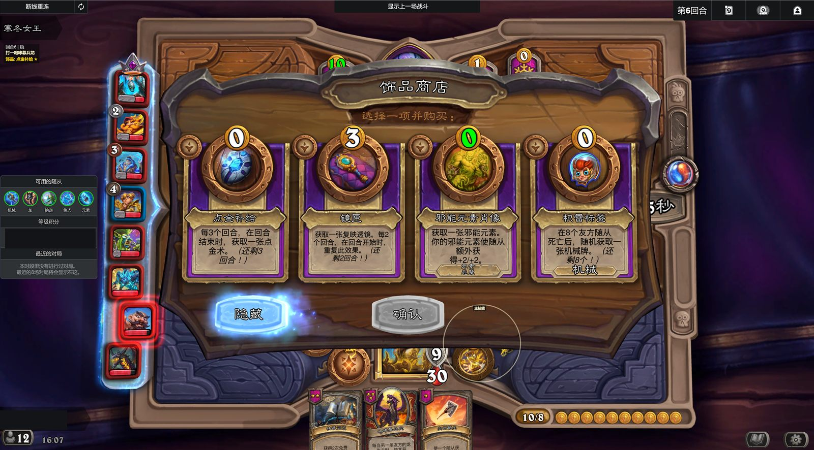
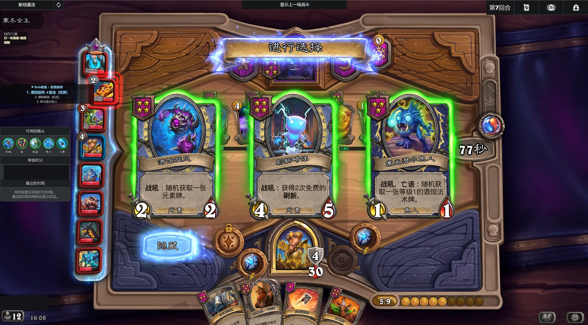

Bob Coach 功能展示
在回合时间里快速看懂下一步。查看安装教程
操作边界：BobCoach 只提供建议，不会自动操作游戏，最终选择始终由玩家完成。
购买建议
商店里同时出现多个随从时，BobCoach 会标出当前阵容更值得购买的目标，减少反复比较的时间。

升本建议
当这一回合适合升级酒馆等级时，BobCoach 会在升本按钮附近给出提示，帮助你权衡战力和成长节奏。

技能提示
英雄技能容易被忙碌操作忽略时，BobCoach 会提醒更合适的使用时机。

饰品推荐
面对多件饰品时，BobCoach 会结合当前对局标出更合适的选择，玩家仍可查看全部效果后自行决定。

发现选择
遇到三选一等发现界面时，BobCoach 会辅助比较候选项，让关键选择更直观。
